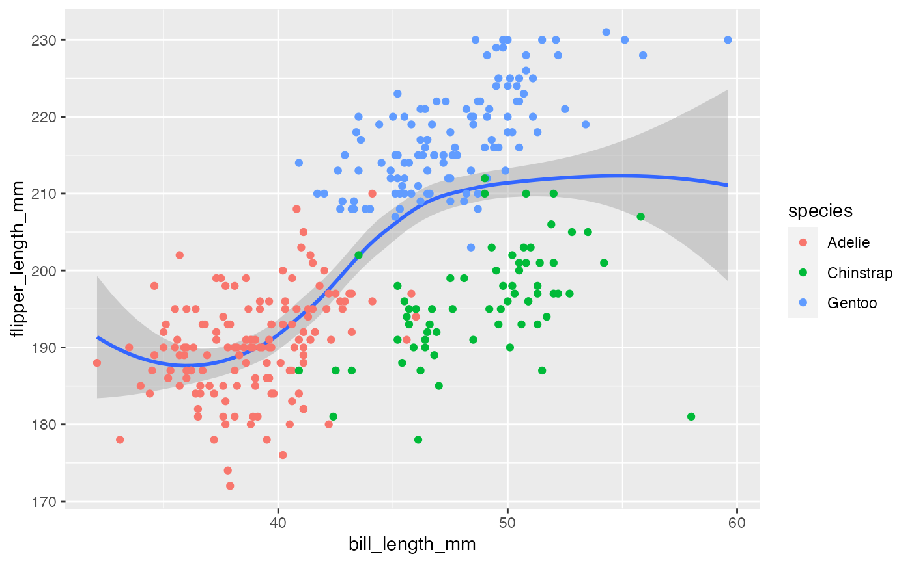
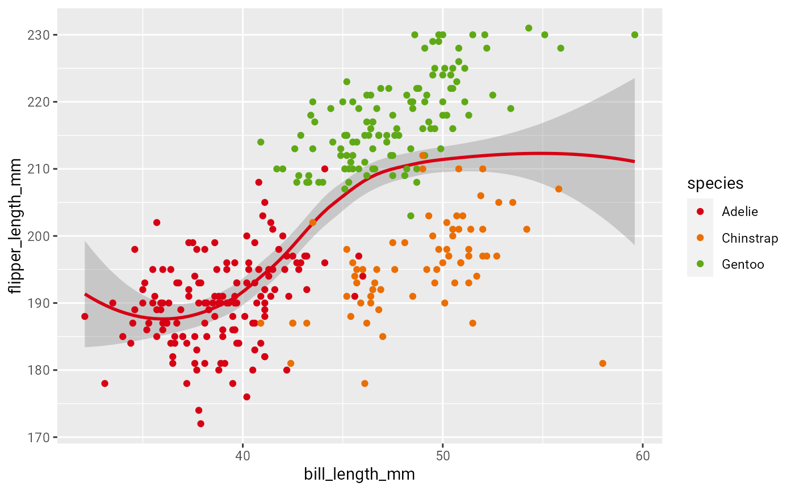

Set the DKS color theme for ggplot2 plots. This is a more coherent version of theming using the thematic package.
Usage
use_dksz_theme(
accent = "red",
palette = "main",
font = "Roboto",
font_scale = 1,
reverse = FALSE
)Arguments
- accent
String, the accent color to choose (defaults to
red). There are several options available:red,green,black,yellow,grey- palette
String, the color palette to use (defaults to
main). There are several options available:main,playful,full,decent,bright.- font
String, a font of choice (defaults to Roboto)
- font_scale
Integer, scaling factor for fonts (defaults to 1)
- reverse
Logical, defaults to
FALSE. Setting this toTRUEchanges the order of the colors.
Examples
library(ggplot2)
# Ordinary ggplot2 plot
test_plot <- palmer_penguins %>%
ggplot(aes(bill_length_mm, flipper_length_mm)) +
geom_smooth(method = "loess") +
geom_point(aes(color = species))
test_plot
#> `geom_smooth()` using formula 'y ~ x'

# Setting the theme
use_dksz_theme()
test_plot
#> `geom_smooth()` using formula 'y ~ x'

# Remove theme
use_base_theme()